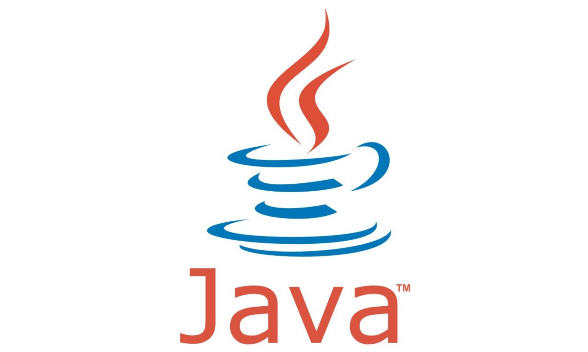

- Pascal;
- Clipper;
- Cobol;
- Linguagem usada em Mainframes;
- Pouco conhecida na atualidade;
- Linguagem C;
- Linguagem C#
- Criada pela Microsoft;
- Linguagem Java
- Mantida pela Oracle; 

- Exemplos de Aplicação:
- Aplicativos Desktop;
- Aplicativos Mobile;
- Websites